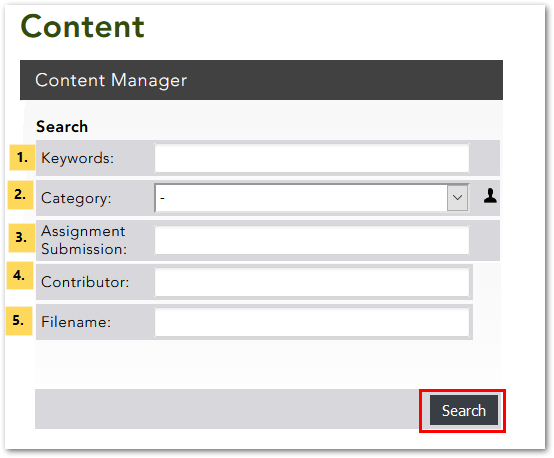
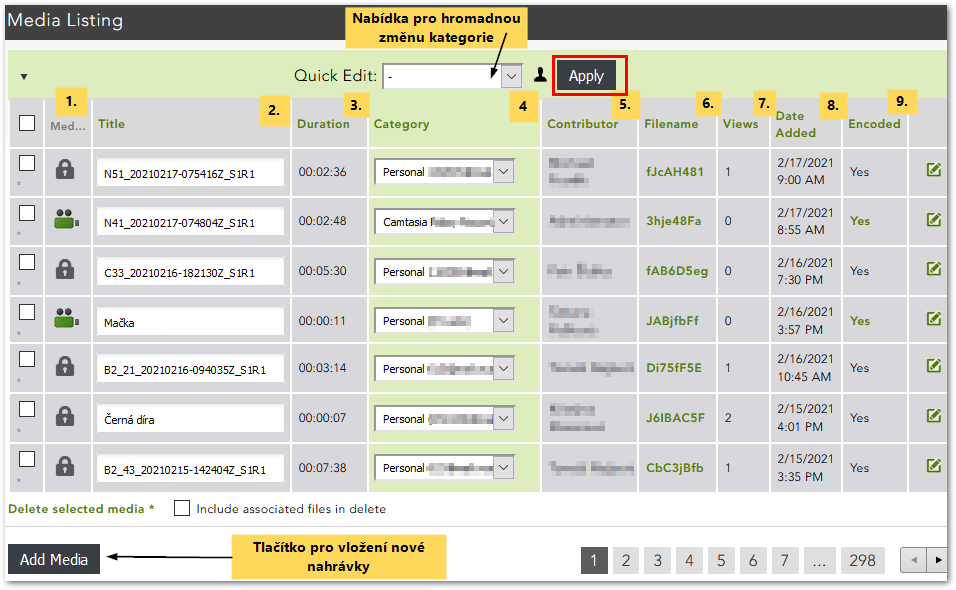
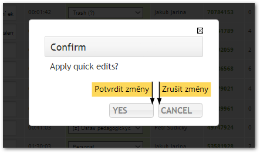

Stránka Můj obsah¶
Co je stránka My Content¶
Stránka My Content (Můj obsah) v sobě zahrnuje přehled veškerého Vašeho obsahu v Medialu a umožňuje Vám tento obsah spravovat.
Z knihovny videí se na stránku My Content dostanete kliknutím na tlačítko “My Account” (v pravo nahoře) a výběrem možnosti “My Content” z rozbalovací nabídky.

Hledání a filtrování nahrávek¶

Sekce Search (Hledání) v horní části stránky Vám umožní prohledávat a filtrovat seznam svých nahrávek podle několika různých parametrů. Využijete ji tedy především, pokud máte v Medialu nahrané větší množství obsahu. Pro filtrování můžete využít následující položky:
- Klíčová slova – vyhledá zadaný text v názvech a popiscích nahrávek
- Kategorie – zobrazí jen nahrávky patřící do zvolené kategorie
- Zadání úkolu – zobrazí nahrávky, které studenti odevzdi v rámci úkolu
- Autor – vyhledá zadaný text ve jménech autorů nahrávek
- Název souboru – vyhledá zadaný text v názvech souborů
Poznámka: Při filtrování je možné použít i části slov. Velikost písmen nehraje roli. Je ale nutné použít zástupný znak “*“. Dotaz “lišk*” Vám tedy vyhledá i řetězce jako “liška”, “lišky”, “Lišková” apod.
Po kliknutí na tlačítko “Search” se Vám v seznamu nahrávek zobrazí pouze ty, které odpovídají nastaveným parametrům.
Prohlížení a správa obsahu¶

V sekci Media Listing (Seznam médií) naleznete přehledný soupis všech svých videí a zvukových nahrávek. Jednotlivé sloupce obsahují podrobnější informace o každé nahrávce:
- Typ média – různé ikonky v tomto sloupci označují audio- a video soubory vložené z počítače a nahrávky pořízené pomocí webkamery nebo mikrofonu; kliknutím na ikonku lze nahrávku přehrát
- Název nahrávky
- Doba trvání
- Kategorie
- Autor – jméno uživatele, který nahrávku do knihovny vložil
- Název souboru – uvádí název, pod kterým je soubor s nahrávkou uložen v Medialu (liší se od původního názvu souboru), po kliknutí na název lze soubor s videem stáhnout
- Počet zhlédnutí nahrávky
- Datum a čas vložení nahrávky
- Stav zpracování – ukazuje průběh zpracování nahrávky, u již zpracovaných nahrávek se zobrazí zelený nápis “Yes”
Kliknutím na nadpisy v záhlaví jednotlivých sloupců seznam seřadíte podle daného atributu. Chcete-li například nahrávky seřadit od nejdelší po nejkratší, klikněte na nadpis “Duration”.
Přímo v soupisu můžete také rychle a jednoduše provádět základní úpravy nahrávek:
- pro změnu názvu nahrávky vepište nový název do textového pole ve sloupci “Title” a potvrďte tlačítkem “Apply”
- pro změnu kategorie vyberte novou kategorii z rozbalovací nabídky ve sloupci “Category” a potvrďte tlačítkem “Apply”
- pro hromadnou změnu kategorie u více videí vyberte patřičná videa pomocí zaškrtávacích políček vlevo a vyberte novou kategorii z rozbalovací nabídky v horní části soupisu a potvrďte tlačítkem “Apply”
Pozor! Veškeré provedené změny je třeba uložit stisknutím tlačítka “Apply”!
Medial Vás ještě požádá o potvrzení, zda skutečně chcete provedené změny aplikovat. Kliknutím na tlačítko “Yes” změny potvrdíte, kliknutím na tlačítko “Cancel” zrušíte.

V neposlední řadě je na stránce My Content možné nahrávky také smazat: stačí označit nahrávky, které chcete odstranit, pomocí zaškrtávacího políčka vlevo a kliknut na “Delete selected media”. Následně budete opět vyzváni k potvrzení svého rozhodnutí.
Medial umožňuje dodatečně upravovat i další podrobnosti o nahrávce jako tagy nebo náhledové obrázky. Jak na to se dozvíte v tomto návodu.